2023 云原生系统监控
- 理解监控系统的意义和分类
- 理解 Prometheus 的架构
- Prometheus 的指标类型
- 深入理解 Prometheus 数据采集、数据存储和数据消费
监控系统
为什么监控，监控什么内容？
- 对自己系统的运行状态了如指掌，有问题及时发现，而不让用户先发现我们系统不能使用。
- 我们也需要知道我们的服务运行情况。
监控目的
- 长期趋势分析：比如资源用量预测
- 对照分析：比如两个版本的系统运行资源使用情况的差异
- 告警：当系统出现或者即将出现故障时，监控系统需要迅速反应并通知管理员
- 故障分析与定位：通过对不同监控监控以及历史数据的分析，能够找到并解决根源问题
- 数据可视化：通过可视化仪表盘能够直接荻取系统的运行状态、资源使用情况、以及服务运行状态等直观的信息
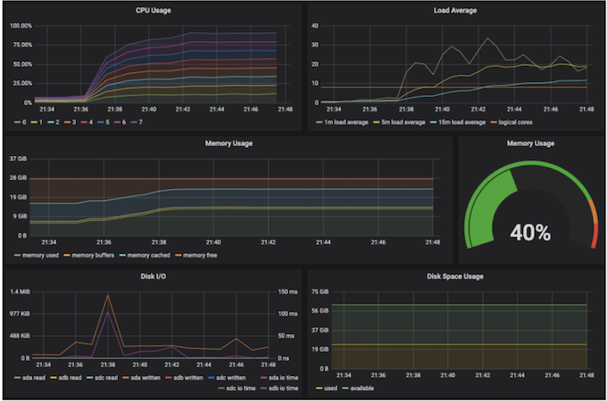
监控的分类
黑盒监控
- 实现机制
- 从系统外部监控。
- 对应用运行逻辑一无所知。
- 基于 ping, http request 等检测手段，并等待检测结果．
- 应用场景
- 从系统外部观测整体可用性。
- 无法获得系统内部的运行情况。
- 测试结果通常是布尔型：成功或失败，无法全方位监控。
白盒监控
- 实现机制
- 通过侵入性代码采集系统指标（如cgroup） 和自定义业务指标（如 httpcode，并发request，用户行为信息等）
- 应用场景
- 黑盒监控的补充
- 通过白盒能够了解其内部的实际运行状态，通过对监控指标的观察能够预判可能出现的问题，从而对潜在的不确定因素进行优化。
- 监控指标丰富可扩展，可监控 CPU 利用率，也可以监控并发请求数量。
Prometheus 架构
由前 Google 员工，受 Google 内部 Borgman 的启发，2012 年开始的开源项目，2018 年进入毕业状态。Prometheus: 先见之明
- 以指标名称和键值对唯一标识的基于时间序列的多维数据模型
- 支持多维灵活查询的 PromQL
- 与存储系统解耦
- 基于 HTTP协议的Pull模式进行时间序列指标采集
- 中间网关支持 Push 模式
- 基于静态配置和或服务发现的目标发现机制
- 灵活的图像化展示
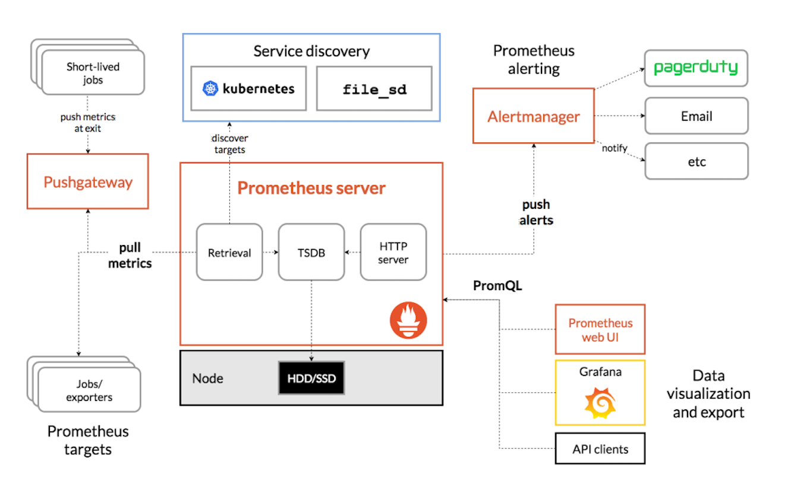
Prometheus数据模型
- 指标名与标签（Metrics Name和Labels）
- 每个业务指标由指标名称和键值对标签唯一标识
- 采样点（Samples）
- 每次指标收集到的来样数据由两部分组成
- Timestamp
- Value
- 每次指标收集到的来样数据由两部分组成
- 指标表示方式
- OpenTSDB的标示方式
<metric name>(<labelname>=<labelvalue>，...)
- 示例
api_http_requests_total{method="POST", handler="/messages"}
- OpenTSDB的标示方式
Prometheus的指标类型
-
counter（计数器器）
- Counter 类型代表一种样本数据单调递增的指标，即只增不减，除非 监控系统发生了重置
-
Gauge (仪表盘)
- Gauge 类型代表一种样本数据可以任意变化的指标，即可增可减
-
Histogram (直方图)
- Histogram 在一段时间范围内对数据进行采样(通常是请求持续时间或响应大小等）并将其计入可配置的存储桶（bucket）中，后续可通过指定区间筛选样本，也可以统计、样本总数，最后一般将数据展示为直方图，
- 样本的值分布在 bucket 中的数量，命名为
<basenames_bucket{le="<上边界>"}。 - 所有样木值的大小总和，命名为
<basename>_sum - 样本总数，命名为
<basename>_count， 值和<basename>_bucket{le="+lnf"}相同。
-
Summary（摘要）
- 与Histogram 类型类似，用于表示一段时间内的数据采样结果(通常是请求持续时间或响应大小等），但它直接存储了分位数通过客户端计算，然后展示出来），而不是通过区间来计算。
- 它们都包含了
<basename>_sum和<basename>_count指标。 - Histogram需要通过
<basename>_bucket来计算分位数，而 Summary则直接存储了分位数的值。
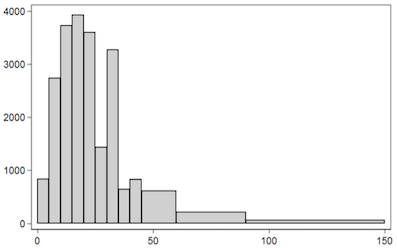
Redis故障后限流、降级的应急预案
极少的空间来标识超大量的数据，所以一旦relis 出现了故障。数据库很快就会招架不住，很有可能就会宕机。 数据库宕机系统就会挂，
两种解决方法： 一个是降级，一个是限流。
-
降级： 可以使用本地缓存，将缓存数据在这个jvm中，一旦redis故障查不到，就直接启用本地缓存，就不用走数据库。 那么请求过来， 就可以直接从这个本地缓存中拿数据，常见的本地缓存的像这个guava， ehcache， caffeine。 性能和稳定性能各方面都很优秀
-
限流 一般在网关层做一些限制， 此如说这个qps是1万， 可以把这个流量控制在每秒1,000个。 那么其他的其他的一些请求就查接打回， 在源头上做好把关。然后在界面上做一些友好提示， 排队中请稍后再试，限流算法有很多，像令牌牌筒算法， 漏筒算法，还有滑动窗口算法。目的就是为了通过这个限流算法， 来挡住这个流量洪峰， 避免直接去沖击数据库
监控数据的采集 (Push or Pull)
| Push | Pull | |
|---|---|---|
| 代表应用 | InfluxDB | Prometheus |
| 发起者 | 被监控方发起 | 监控系统发起（短时1ob 如何监控？） |
| 网络需求 | 目标地址固定，容易绕过防火墙 | 需要连接所有被监控方，通常需要与被监控房部署在一起 |
| 并发 | 由被监控系统上报数据，容易对监控系统造成较大并发压力，导致监控系统网络拥塞或者系统过载 | 可由监控系统轮训并顺序拉取，无并发问题 |
| 故障感知 | 若监控系统假死，被监控方无法感知，可能会继续推送数据导致雪崩 | 若系统超负荷，数据采集会变慢，雪崩几率较小 |
| 目标发现 | 被监控目标主动上报，无需进行目标发现 | 需要主动发现被监控目标 |
在Kubernetes 集群中的监控系统
每个节点的kubelet 会收集当前节点host上所有信息，包括 CPU、内存、磁盘等。Prometheus 会pull这些信息，给每个节点打上标签来区分不同的节点。
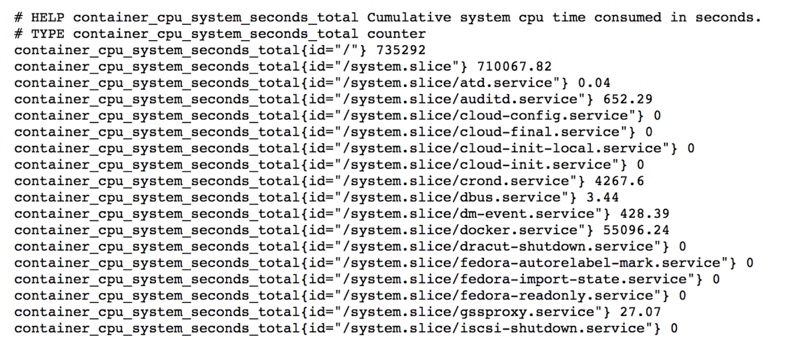
在 Kubernetes 中汇报指标
应用 Pod 需要声明上报指标端口和地址
apiVersion: v1
kind: Pod
metadata:
annotations:
prometheus.io/port: http-metrics
prometheus.io/scrape: "true"
name: loki-0
namespace: default
spec:
ports:
- containerPort: 3100
name: http-metrics
protocol: TCP
应用启动时， 需要注册metrics
http.Handle(“/metrics”, promhttp.Handler()）
http.ListenAndserve(sever.MetricsBindAddress, nil）
注册指标
funcRegisterMetrics(){
registerMetriconce.Do(func(){
prometheus.MustRegister(APIServerRequests）
prometheus.MustRegister(WorkQueueSize）
})
}
代码中输出指标
metrics.AddAPIServerReguest(controllerName, constants.CoreAPIGroup, constants.SecretResource，constants.Get, cn.Namespace）
在Kubernetes 集群中的监控系统
Kubernetes的控制平面组件，包括各种controller名都原生的暴露Prometheus格式的metrics。
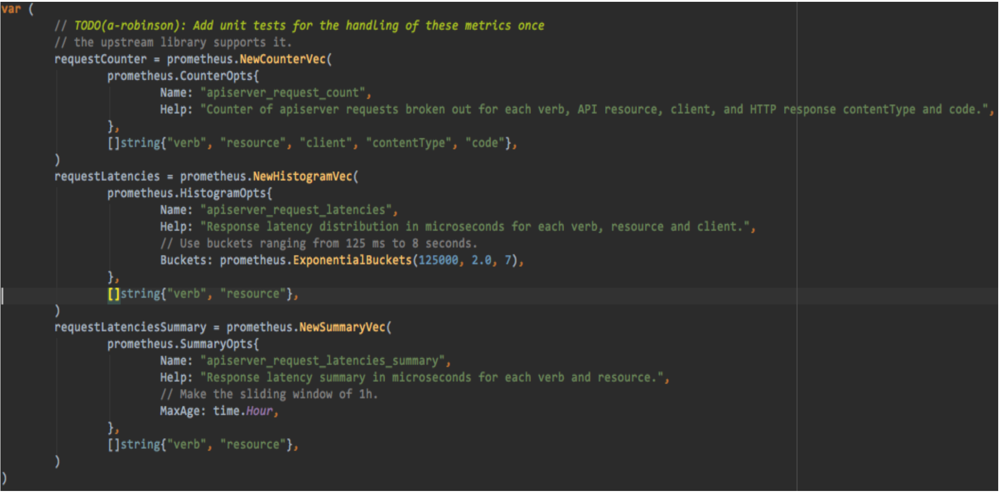
数据的存储(TSDB）
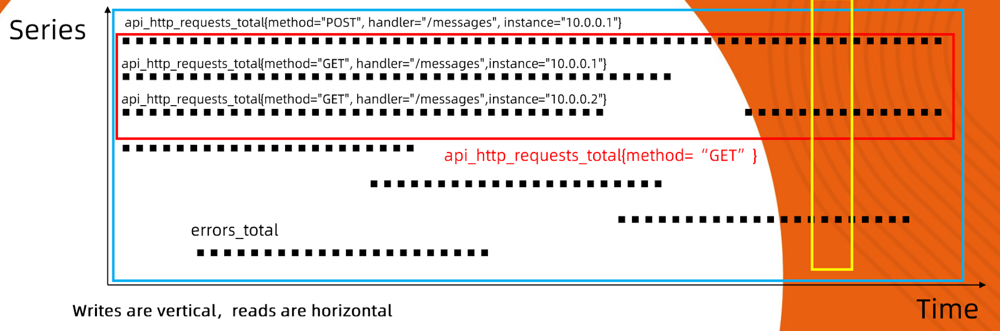
- 纵向写：每一次数据采集，会汇报周期内所有指标数据
- 横向读：指标读取通常是按特定序列读取，单条时间序列=Metrics Name ＋ 唯一的labels。
数据的存储机制
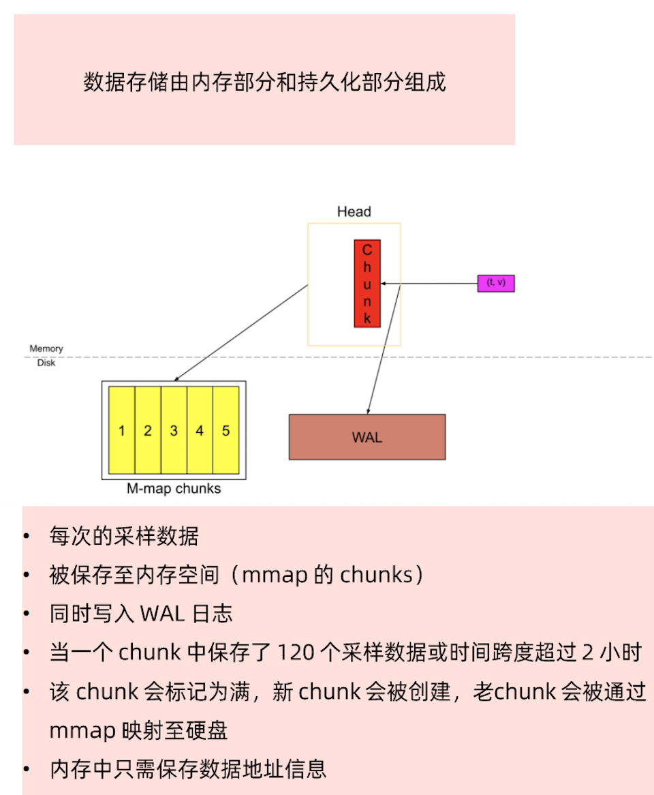
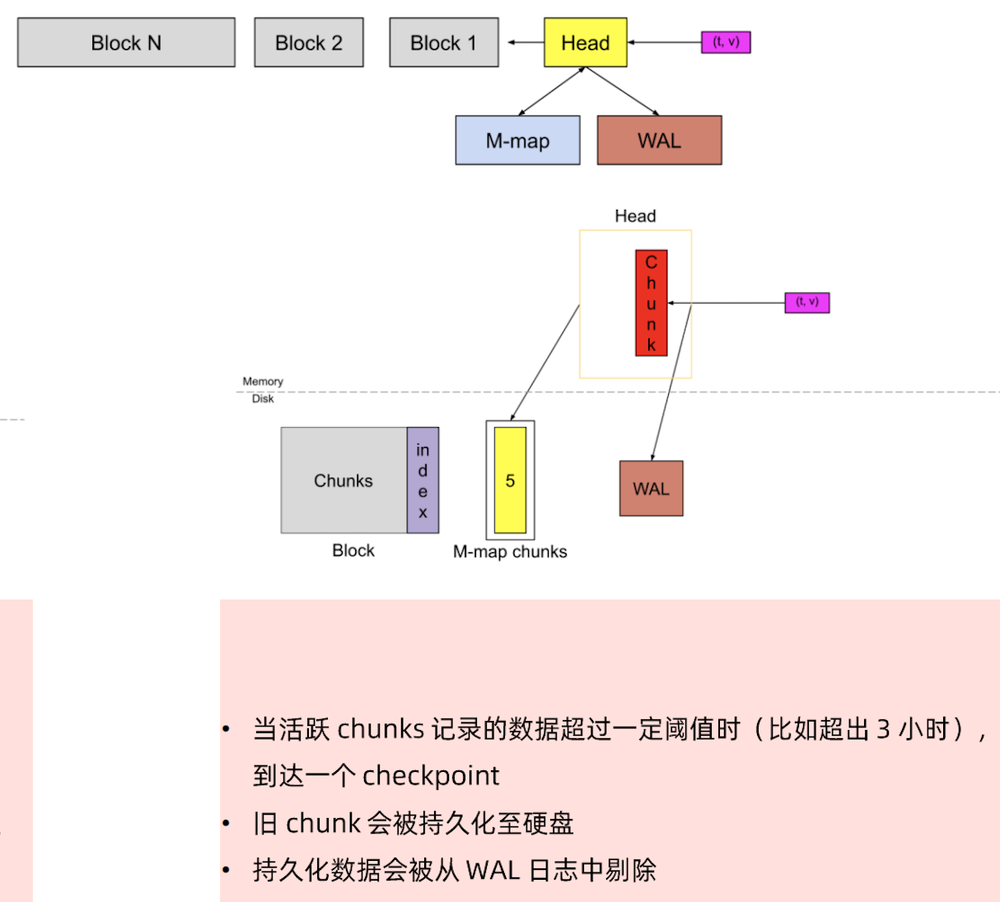
数据索引
- 每一个block中，每个时间序列都有一个唯一ID。
- 索引模块维护了一个键值Label到ID的映射关系
- 通过K路轮训完成时间序列的高效查询。
{
__name__ = "request_total",
pod = "mynginx-0",
status = 200，
method = "GET"
}
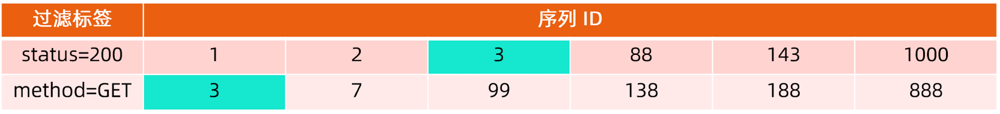
数据的压缩
- Time 压缩
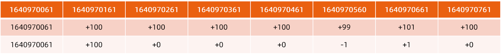
- Series 压缩
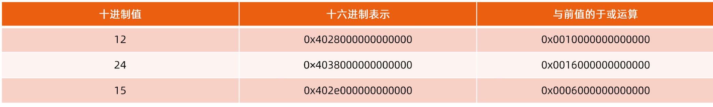
存储规划
- 一个采样点
- 8字节时间戳+8字节值，总计16字节
- 压缩后平均1.37字节/采样点，12倍空间节省！
- 500万个活跃时间序列
- 30秒采样间隔
- 1个月历史保留
- 合计需要166000个采样数据/秒
- 总计需要存储432Billion采样数据
- 每个采样点8字节时间截+8字节值，总计需要8T存储
- 应用压缩算法后只需0.8TB存储空间
数据的查询与消费PromQL
histogram_quantile(0.95, sum(rate(httpserver_execution_latency_seconds_bucket[5M])) by (le))- Histogram是直方图，
httpserver_execution_latency_seconds_bucket是直方图指标，是将httpserver处理请求的时间放入不同的桶内，其表达的是落在不同时长区间的响应次数。 by（le），是将采集的数据按桶的上边界分组。rate(httpserver_execution_latency_seconds_bucket[5m])，计算的是五分钟内的变化率。sum()，是将所有指标的变化率总计。- 0.95，是取95分位。
综上：上述表达式计算的是httpserver处理请求时，95%的请求在五分钟内，在不同响应时间区间的处理的数量的变化情况。
在 Kubernetes 集群中的监控系统
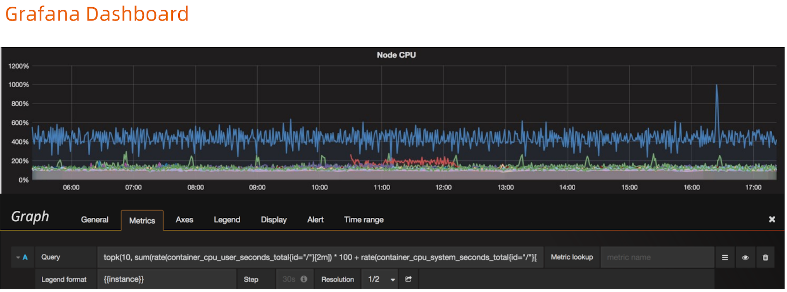
开启告警
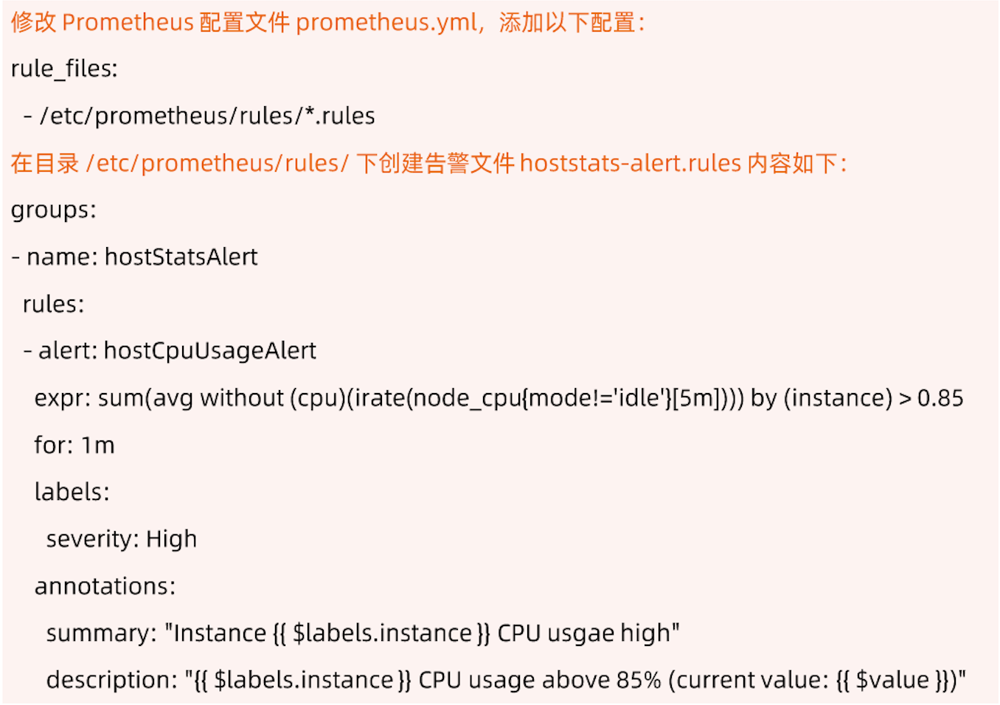
以 Thanos 应对规模化挑战
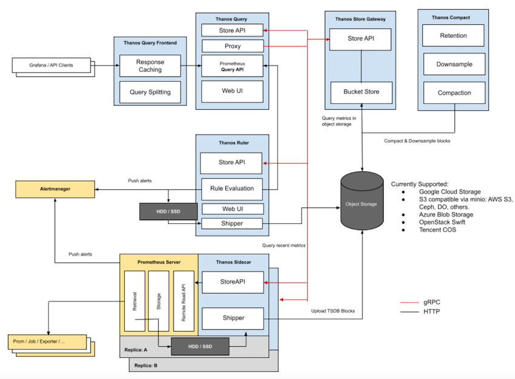